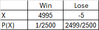

Calculate the events from a probability distribution.
Calculate the mean and standard deviaton for probability distributions
Many decisions in business and insurance are made by assigning probabilities to all the possible outcomes pertaining to the situation and making evaluations based on the results. A salesperson may compute the probability of how many sales for each day. An insurance company might be able to assign probability to the number of vehicles a family owns. Once the probabilities can be determined, we can find statistics such as the mean, variance, and standard deviation for these events. The salesperson can find the average number of sales per day or week to determine inventory. An insurance company can determine the expected profit based on claims.
We will begin this section by creating a probability distribution and then find its statistics. We will then compare it to the theoretical values.
Pre-Class Activity: Dice Data
Each person will roll a die 50 times and keep track of the number that lands face up each time. It’s handy using a tally for each dice value. Then find the total frequency for each dice value and then its corresponding probability. There is a link for some virtual dice below.
Next, we want to graph the frequency or the probabilities to see the shape of the distribution. Using a graphing calculator, enter the dice number in \(L_1 \) and the frequency in \(L_2\) . Use the [STAT] button and select option 1: Edit [enter] to enter the data.
Figure4.4.2.Entering dice data into calculator
Create a histogram on the calculator. Use [2nd] [y =] button for the [Stat Plot] and select the first option and [enter]. Make sure ON is highlight or hit [enter] to turn on the graph. Arrow down once to TYPE and scroll over to the histogram which is the third image and hit [enter], then identify where the data is located, Xlist: \(L_1 \) and Freq: \(L_2\text{.}\) Make sure to adjust the [Window] to scale for x = [0,7] and y = [0, largest frequency] and then [graph]. (If you do not have a graphing calculator you can construct a bar graph by hand. For StatKey you will have to list all 50 dice rolls individually.)
Figure4.4.3.Graph of dice frequencies
How would you describe the shape of your distribution? What does that tell you about the probability of each event? We will compare your distribution in class.
Subsection4.4.1Understanding the Basics
Let us review some vocabulary that we will be using in this section. Recall from Chapter 1 that a variable was defined as a characteristic that can assume different values. Since we are focusing on probability we will use random variables.
A random variable is a variable whose values are determined by chance. The value of your dice roll was random. Each student in class will likely have differing results.
Discrete variables have values that can be counted (whole numbers). The number of sixes that was rolled is discrete. The number of tables in each classroom is also discrete. While continuous variables can assume any real number value. The temperature outside does not jump from 75 to 76, it can be any temperature in between these endpoints such as 75.6 to 75.83.
When we organize our random variable, with discrete outcomes, with its probabilities like we did with the dice data table we create a discrete probability distribution. The probabilities can be determined by observation or theoretically.
Definition4.4.4.
A discrete probability distribution consists of the values a random variable can assume and the corresponding probabilities of those values.
If we look at your dice distribution, you will notice the total frequency should be 50 dice rolls. Each probability value is between 0 and 1, inclusive. It is possible someone may not roll a 6 or every roll happened to be a 6. If you find the sum of all your probabilities it should equal 1 which represents 100% of the sample space. Of course, if there is rounding, it may be off by less than a tenth.
Checkpoint4.4.5.Discrete Variables.
Which of the following variables are discrete? Select all statements that apply.
The number of energy drinks you purchased each day.
Yes, counting the number of drinks is discrete.
Time to complete the Bolder Boulder 10K run..
Time is continuous. The 2025 winning time was 28:21 minutes.
Speed of swimmers in 100 m breaststroke.
Speed is a continuous rate.
Number of clients an insurance agent has.
Yes, counting the number of clients is discrete.
Checkpoint4.4.6.Continuous Variables.
Which of the following variables are continuous? Select all statements that apply.
The weight of players on the football team.
Yes, weight is continuous.
The number of credit hours students are taking this semester.
Credit hours will be discrete.
The number of pets students have.
The number of pets is discrete.
Speed of swimmers in 100 m breaststroke.
Speed of swimmers will be continuous.
Checkpoint4.4.7.Probability Distribution.
Determine whether the following table is an appropriate probability distribution. Explain why or why not.
Figure4.4.8.Solution.
No because some of probability values are negative or more than 1. The sum of the probabilities should equal 1.
Checkpoint4.4.9.Probability Distribution.
Is the following table an appropriate probability distribution? Explain why or why not.
Figure4.4.10.Solution.
Yes, since the probability values are between 0 and 1. The sum of the probabilities equals 1.
Subsection4.4.2Summary Statistics
The next step in our adventure with probability distributions is to find the summary statistics – the mean, variance, and standard deviation. We determine the theoretical expected value of the outcome over time.
So let’s think of this intuitively. If you are playing a board game with one die, how many spaces are you expected to move – on average, for the game?
If we want to test this out experimentally, we could roll the dice a whole bunch and find the average of the dice roll values. We will come back to this with your data.
How can we do this theoretically? First, think like a fifth grader… we can add up all the dice numbers together and divide by the six sides thus 21/6 = 3.5 spaces on average. Now let’s look at the college version. We create the theoretical probability distribution table – we list the dice numbers and their probabilities. We are going to multiply each event by it’s probability and then add them all together.
where each X is one of the outcomes and each P(X) is the corresponding probability.
Now let’s find the mean of the 50 dice rolls. Multiple each outcome by its probability, then add them together.
Figure4.4.13.
Mean is \(\mu = 1(.20)+2(.18)+3(.16)+4(.14)+5(.12)+6(.20)= 3.4\)
Which is pretty close to the theoretical value. Now find mean for your 50 dice rolls. Your mean value should be between 1 and 6 since those are the possible dice values.
Definition4.4.14.
To find the variance, subtract the mean from each outcome x then square the difference and multiply by its probability p(x), then find the sum of the products.
From the center of 3.4 most values are within 1.8 of it.
Checkpoint4.4.16.Statistics.
A bank manager wants to know the average number of credit cards customers have. From a sample of customers the following probability distribution was found.
Figure4.4.17.
Find the mean, variance, and standard deviation for the probability distribution.
Solution1.
Mean is \(\mu = 0(.08)+1(.18)+2(.27)+3(.44)+4(.03)=2.16 \)
Standard deviation is \(\sigma = \sqrt{1.186} =1.009 \)
Subsection4.4.3Expected Value
Another concept related to the mean for a probability distribution is that of the expected value or expectations over time. Expected values can be used in various types of games of chance and insurance. Note that the expected value formula is the same as the theoretical mean formula.
Definition4.4.18.
The expected value of a discrete probability distribution is the theoretical average of the variable. It is the net gain of each outcome multiplied by its probability.
The Greeley Fire Department wishes to raise $5000 to purchase some new equipment. They decide to conduct a raffle. A cash prize of $5000 is to be awarded. If 2500 tickets are sold at $5 each find the expected gain per ticket. Are they selling enough tickets to reach their goal?
The first step is creating the probability distribution table. We want the net gain and the probability for each event. We have two main events: the person wins the raffle or loses. Since each person must pay $5 for the ticket we take the prize of 5000-5=4995 as the net profit outcome for a win. If the person loses, they are out the 5 thus -5 is the outcome. Since there is just one winner, the probability is 1/2500 since 2500 tickets are sold. There are 2499 losing tickets thus the probability of losing is 2499/2500.

Figure4.4.19.
The expected value is \(E(x)=4995(1/2500)-5(2499/2500)=-3 \) which means if a person buys a raffle ticket, they lose on average $3 per ticket.
This means the fire department gains $3 per ticket. Therefore, the Greeley Fire department gains 3(2500) = $7500 profit from the raffle.
Another way to look at it is $5(2500 tickets) - $5000 prize = $7500 profit for the fire department. So either way they will reach their goal.
Checkpoint4.4.20.Expected Value.
If one thousand tickets are sold at $1 each in a raffle for a TV valued at $350, what is the expected value if you purchase one ticket?
Solution.
The net win is $349 with a probability of 1/1000. If you lose, the outcome is -1 with a probability of 999/1000. Therefore, the expected value \(E(x)=349(1/1000)-1(999/1000)=-.65\text{.}\) You lose about $.65 for each ticket.
Subsection4.4.4Using Technology
Lucky for us, we can use technology to help us find the summary statistics for a probability distribution. Let’s revisit the 50 dice rolls.
Figure4.4.21.
To enter the data use [STAT] button and under EDIT select option 1: Edit [enter] to input the values. Enter the dice number in L1 and the probability in L2.
Figure4.4.22.
To find the summary statistics begin with the [STAT] button, use the arrow to the right once to highlight CALC across the top and select option 1: 1-var Stats and [enter]. Identify where the data is located as [2nd] 1 [,] [2nd] 2 [enter] on the TI83. On the TI84 the Xlist is L1 and Freq is L2 and then Calculate.
Figure4.4.23.Summary statistics on calculator
This gives the mean 3.4 and population standard deviation 1.8 (this is the only time we will use σx). To get the variance you will need to square the standard deviation, thus \(1.8^2 = 3.24\)
Checkpoint4.4.24.Statistics.
A bank manager wants to know the average number of credit cards customers have. From a sample of customers the following probability distribution was found.
Table4.4.25.
Credit cards
0
1
2
3
4
P(X)
0.08
0.18
0.27
0.44
0.03
Find the mean, variance, and standard deviation for the probability distribution.
Solution.
Mean is \(\mu =2.16 \) and the standard deviation is \(\sigma =1.017\) and the variance is \(\sigma^2 =1.017^2 = 1.03\)
Figure4.4.26.
Subsection4.4.5Random Phones Investigation
Four students drop off their smartphones at a testing center. One day, as a cruel joke, the testing center staff member decides to return the phones to their owners completely at random. How many phones were returned to the correct student?
Take a moment to think how can you create a way to simulate a random assignment of four phones to four students.
Break into groups of four or five people. Give each person a notecard to represent the phone. Have each student write their name on the card. Have the students flip the cards so you cannot see the names, mix them up, and randomly pass them out to the group of four. The fifth person can act as an evil staff member. Record how many people got the correct card/phone back. Repeat 5 times for the simulation.
Perform a total of five random assignments, recording the information on a table like below.
Figure4.4.27.
Here is a sample of five simulations from a group of students.
Figure4.4.28.
Next will combine the class data for the empirical estimate.
The discrete random variable can be called X where X represents the number of correct phones returned. For example, if X=2 that means two phones were correctly returned to the owners (and 2 phones were not correctly returned).
Here is an example of the results of the random assignments from a class.
Figure4.4.29.Combined totals
What is the empirical estimate of the probability of all four students getting the correct phone?
Based on this sample of 5 groups of students with five trials each, the probability of all four students getting the correct phone back was 1/25 = 4%. Does this seem likely to you?
Now let us analyze this theoretically. How many ways can we pass out the four phones? Take a minute to think about how to do this.
We are looking at a permutation of four items where the order matters. Thus, there are \(4 \times 3 \times 2 \times 1 = 24 \) unique ways to pass out the four phones.
Below is a theoretical sample space for the random variable X for number of correct matches when four phones are randomly returned to students. We can present these outcomes in a list where each item is a different ordering of the numbers 1 through 4 which represents the order with which the phones are returned to the students.
We can see there are 24 possible ways to randomly assign the four phones to students. How many received the correct phones with these permutations?
Figure4.4.30.List of outcomes
Identify the number of correct phones returned: 1234 means all four returned correctly; 1243 means 1 and 2 correct but 3 and 4 were switched thus 2 correct. The item 1324 means 1 and 4 were returned correctly but 2 and 3 were switched, thus 2 correct.
Determine how many were returned correctly in the list above and make a list of the number of correctly returned phones for the 24 possible outcomes.
The theoretical sample space for the random variable X for number of correct matches when four phones are randomly returned to the students is given below:
Figure4.4.31.List of correct matches
We can summarize the information into a frequency table where \(X\) represents the correct number of phones returned:
Figure4.4.32.Frequency of correct matches
Which can be converted to a probability distribution table for the random variable X for the number of correct matches when the phones are randomly returned out of the sample space of 24 outcomes.
Figure4.4.33.Probability of correct matches
Now we can calculate the mean and standard deviation for the number of correct matches using the theoretical probability distribution.
Recall that for a random variable X with probability function P(X), the mean is \(\mu = \sum {X \cdot P(X)} \) thus,
Thus the mean is 1 correct match with a standard deviation of 1.
Using technology, enter the number of correct matches in L1 and the corresponding probability in L2. Using the STAT button use the arrow once to the right to CALC and select 1: 1VarStat and input the data location as L1 , L2 for the TI83 Plus.